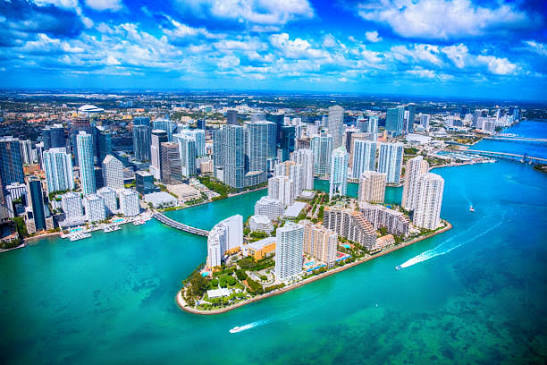
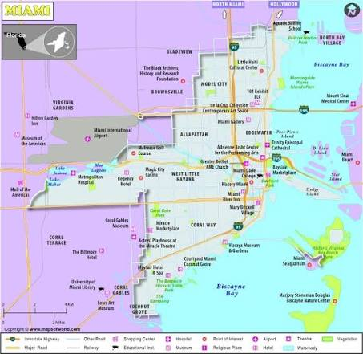

Miami officially became a city in 1896 and has grown a lot since then. Julia Tuttie played a major role in the city's development and is known as the Mother Of Miami. The arrival of the railroad helped bring more people and businesses to the area. Today, Miami is known for its beautiful beaches, warm weather, diverse culture, and exciting nightlife.

Created By: Tannequa Whitehead